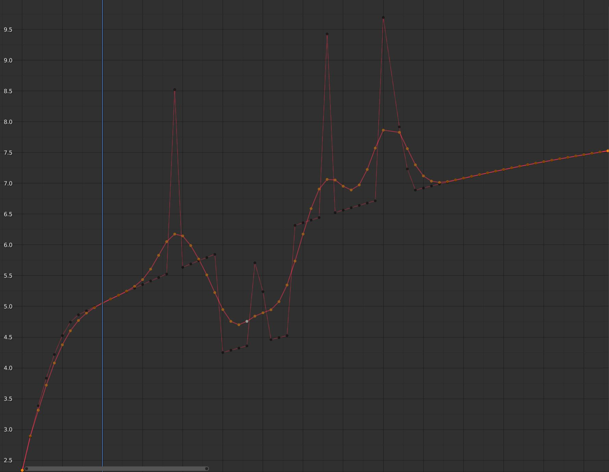

Chỉnh sửa F-Curve¶
Transform¶
Tham khảo
- Mode:
Edit Mode
- Menu:
Một F-Curve có thể được chỉnh sửa bằng cách biến đổi vị trí của các keyframe trên đó.
- Move, Rotate, Scale
Giống như các thành phần khác trong Blender, keyframe có thể được di chuyển, xoay và thu phóng như mô tả trong Biến đổi cơ bản.
- Extend E
Cho phép bạn nhanh chóng di chuyển các keyframe đang chọn nằm về một bên nhất định của Playhead. Tính năng này rất tiện khi bạn cần, chẳng hạn, dời toàn bộ keyframe sau một thời điểm nào đó sang phải để chừa chỗ cho keyframe mới.
Để dùng toán tử này, trước tiên hãy chọn một phần hoặc toàn bộ keyframe rồi đưa con trỏ chuột sang trái hoặc phải của Playhead. Sau đó, nhấn E, di chuột để di chuyển (chỉ) những keyframe ở bên đó của Playhead, rồi nhấn LMB để xác nhận (hoặc RMB để hủy).
Mẹo
Bạn cũng có thể thay đổi các thuộc tính Key Frame và Value trong nếu muốn nhập số liệu chính xác.
Trong khi biến đổi keyframe, bạn có thể giữ Shift để di chuyển chậm lại nhằm chính xác hơn, hoặc Ctrl để di chuyển theo các bước thô hơn.
Snap¶
Tham khảo
- Menu:
- Shortcut:
Shift-S
Ngoài các toán tử snapping trong menu này, bạn còn có thể bật snapping trên thanh tiêu đề.
- Selection to Current Frame
Đặt thời gian của các keyframe đang chọn về frame hiện tại.
- Selection to Cursor Value
Đặt giá trị của các keyframe đang chọn bằng giá trị của 2D Cursor.
- Selection to Nearest Frame
Làm tròn thời gian của từng keyframe về frame gần nhất.
- Selection to Nearest Second
Làm tròn thời gian của từng keyframe về giây gần nhất. Bạn có thể dùng Use Timecode để hiển thị giây thay cho frame ở phần trên của editor.
- Selection to Nearest Marker
Đặt thời gian của từng keyframe bằng thời gian của marker gần nhất.
- Flatten Handles
Làm phẳng các handle Bézier của các keyframe đang chọn.
- Equalize Handles
Đảm bảo các handle của keyframe đang chọn có độ dài bằng nhau.
- Side
Những handle nào sẽ chịu tác động (trái, phải hay cả hai).
- Handle Length
Độ dài sẽ áp dụng cho các handle Bézier của keyframe đang chọn.
- Flatten
Đặt giá trị của các handle giống với giá trị keyframe tương ứng của chúng.
- Cursor to Selected Ctrl-G
Thay đổi thời gian và giá trị của 2D Cursor thành thời gian và giá trị trung bình của các keyframe đang chọn.
- Cursor Value to Selection
Thay đổi giá trị của 2D Cursor thành giá trị trung bình của các keyframe đang chọn.
Mirror¶
Tham khảo
- Menu:
- Shortcut:
Ctrl-M
Lật đối xứng các keyframe đang chọn qua một điểm tham chiếu.
- By Times over Current Frame
Lật đối xứng theo phương ngang qua frame hiện tại.
- By Times over First Selected Marker
Lật đối xứng theo phương ngang qua marker được chọn đầu tiên.
- By Times over Zero Time
Lật đối xứng theo phương ngang qua frame 0.
- By Values over Cursor Value
Lật đối xứng theo phương dọc qua giá trị của 2D Cursor.
- By Values over Zero Value
Lật đối xứng theo phương dọc qua giá trị 0.
Jump to Selected¶
Tham khảo
- Menu:
- Shortcut:
Ctrl-G
Đặt 2D Cursor tại thời gian và giá trị trung bình của các keyframe đang chọn.
Insert¶
Tham khảo
- Menu:
- Shortcut:
I
Thêm keyframe mới và chọn chúng. Các keyframe đã chọn trước đó vẫn được giữ nguyên trạng thái chọn.
- All Channels
Chèn keyframe vào tất cả F-Curve đang hiển thị và có thể chỉnh sửa, dùng giá trị hiện tại của từng curve.
- Only Selected Channels
Chèn keyframe vào các F-Curve đang chọn, dùng giá trị hiện tại của từng curve.
- Only Active F-Curve
Chèn keyframe vào F-Curve đang hoạt động, dùng giá trị hiện tại của curve.
- Active Channels at Cursor
Chèn keyframe vào F-Curve đang hoạt động với giá trị của 2D Cursor.
- Selected Channels at Cursor
Chèn keyframe vào các F-Curve đang chọn với giá trị của 2D Cursor.
Copy/Paste¶
Tham khảo
- Menu:
,
- Shortcut:
Ctrl-C, Ctrl-V
Dùng Ctrl-C để sao chép các keyframe đang chọn và Ctrl-V để dán chúng. Sau khi dán, panel Adjust Last Operation cung cấp thêm một số tùy chọn:
- Frame Offset
Dịch chuyển các keyframe được dán theo phương ngang sao cho...
- Frame Start
...keyframe đầu tiên nằm đúng vào frame hiện tại.
- Frame End
...keyframe cuối cùng nằm đúng vào frame hiện tại.
- Frame Relative
...chúng nằm cách frame hiện tại đúng bằng khoảng cách như lúc được sao chép.
- No Offset
...chúng giữ nguyên frame ban đầu.
- Value Offset
Dịch chuyển các keyframe được dán theo phương dọc sao cho...
- Left Key
...keyframe đầu tiên nhận giá trị của keyframe hiện có bên trái Playhead.
- Right Key
...keyframe cuối cùng nhận giá trị của keyframe hiện có bên phải Playhead.
- Current Frame Value
...keyframe đầu tiên nhận giá trị của curve tại frame hiện tại.
- Cursor Value
...keyframe đầu tiên nhận giá trị của 2D Cursor.
- No Offset
...chúng giữ nguyên giá trị ban đầu.
- Type
- Mix
Hợp nhất các keyframe được dán với keyframe hiện có, chỉ ghi đè lên những keyframe trùng frame.
- Overwrite All
Xóa toàn bộ keyframe cũ trong các F-Curve đích.
- Overwrite Range
Trong từng F-Curve, xóa các keyframe hiện có nằm trong khoảng của các keyframe được dán vào curve đó.
- Overwrite Entire Range
Trong từng F-Curve, xóa các keyframe hiện có nằm trong khoảng bao trùm tất cả keyframe được dán.
- Flipped
Nếu bạn sao chép keyframe từ một hoặc nhiều cặp bone đối xứng nhau, việc bật tùy chọn này sẽ dán keyframe của các bone bên trái vào curve của các bone bên phải và ngược lại. Ngoài ra, các giá trị còn bị đảo dấu, tạo hiệu ứng lật đối xứng animation.
Duplicate¶
Tham khảo
- Menu:
- Shortcut:
Shift-D
Nhân đôi các keyframe đang chọn. Bạn có thể định vị lại chúng bằng cách di chuyển chuột.
Delete¶
Tham khảo
- Menu:
- Shortcut:
X, Delete
Nhấn X hoặc Delete sẽ mở một menu pop-up, từ đó bạn có thể xóa các keyframe đang chọn.
Handle Type¶
Tham khảo
- Menu:
- Shortcut:
V
Đặt loại handle cho các keyframe đang chọn.
Interpolation Mode¶
Tham khảo
- Menu:
- Shortcut:
T
Đặt chế độ interpolation cho các keyframe đang chọn. Chế độ này quyết định kiểu interpolation của curve giữa mỗi keyframe và keyframe kế tiếp.
Easing Type¶
Tham khảo
- Menu:
- Shortcut:
Ctrl-E
Đặt chế độ easing cho các keyframe đang chọn. Chế độ này quyết định easing được áp vào bên trái, bên phải hay cả hai bên của các đoạn curve giữa mỗi keyframe và keyframe kế tiếp.
Density¶
Decimate¶
Tham khảo
- Menu:
- Menu:
Đơn giản hóa một F-Curve bằng cách xóa những keyframe ít ảnh hưởng nhất đến hình dạng của nó.
- Mode
Cách chọn số lượng keyframe cần xóa.
- Ratio
Xóa một tỷ lệ phần trăm keyframe nhất định.
- Remove
Tỷ lệ phần trăm keyframe sẽ xóa.
- Error Margin
Xóa càng nhiều keyframe càng tốt, với điều kiện hình dạng của F-Curve không thay đổi quá một mức nhất định.
- Max Error Margin
Mức độ curve sau khi decimate được phép lệch khỏi curve gốc.
Bake Keyframes¶
Tham khảo
- Menu:
- Shortcut:
Shift-Alt-O
Tạo keyframe tại mỗi frame.
Xem thêm
Bake Channels, vốn cung cấp các tùy chọn về khoảng cần bake và cách bake.
Clean Keyframes¶
Tham khảo
- Menu:
- Shortcut:
X
Tìm và xóa các keyframe dư thừa trong số các keyframe đang chọn. Một keyframe bị coi là dư thừa nếu nó có giá trị giống với các keyframe lân cận -- ngay cả khi các đoạn curve xung quanh nó không phẳng.
Mẹo
Toán tử này có khả năng làm thay đổi hình dạng của các curve liên quan, nên tốt nhất là chạy sau khi, ví dụ, chèn keyframe hàng loạt lên toàn bộ bone của một armature (việc này tạo ra những keyframe vô dụng trên các bone không hề di chuyển) và trước khi tinh chỉnh curve thủ công.
- Threshold
Ngưỡng giá trị. Tăng giá trị này giúp bạn xóa cả những keyframe có giá trị gần như giống với keyframe lân cận.
- Channels
Dọn sạch mọi keyframe (kể cả keyframe không được chọn) trong các F-Curve đang chọn. Nếu một curve chỉ còn lại một keyframe, toàn bộ curve sẽ bị xóa.
Blend¶
Tham khảo
- Menu:
- Shortcut:
Alt-D
Điều chỉnh giá trị của các keyframe đang chọn theo một tỷ lệ phần trăm nhất định. Hãy chọn một toán tử blend, di chuột sang trái hoặc phải để điều chỉnh hệ số, rồi nhấp LMB để xác nhận (hoặc RMB để hủy).
Một số toán tử blend hoạt động dựa trên khái niệm "keyframe lân cận". Nghĩa là chúng chia các keyframe đang chọn thành từng nhóm liền kề, rồi tham chiếu đến các keyframe không được chọn nằm ngay trước và ngay sau mỗi nhóm.
Breakdown¶
Tham khảo
- Menu:
Đặt giá trị của các keyframe đang chọn thành giá trị interpolation từ các keyframe lân cận.
- Factor
Ở giá trị -1, các keyframe được đặt bằng giá trị của keyframe lân cận bên trái.
Ở giá trị 1, chúng được đặt bằng giá trị của keyframe lân cận bên phải.
Với các hệ số khác, chúng được đặt thành giá trị interpolation giữa hai giá trị lân cận, trong đó 0 nằm chính giữa.
Blend to Neighbor¶
Tham khảo
- Menu:
Di chuyển từng keyframe đang chọn về phía giá trị của keyframe lân cận trái hoặc phải theo một tỷ lệ phần trăm nhất định.
- Blend
Khi âm, mỗi keyframe di chuyển Blend phần trăm về phía giá trị của keyframe lân cận bên trái.
Khi dương, chúng di chuyển về phía keyframe lân cận bên phải.
Khi bằng 0, chúng giữ nguyên giá trị ban đầu.
Blend to Default Value¶
Tham khảo
- Menu:
Di chuyển các keyframe đang chọn về phía giá trị mặc định của thuộc tính theo một tỷ lệ phần trăm nhất định.
- Factor
Mức thay đổi giá trị của các keyframe, từ 0 (không thay đổi) đến 1 (đặt lại về giá trị mặc định).
Xem thêm
Toán tử Reset to Default đặt mọi thuộc tính về giá trị mặc định mà không cần đến keyframe.
Ease¶
Tham khảo
- Menu:
Khiến các keyframe đang chọn đi theo một đường cong hình chữ S. Trong khi thanh trượt hiển thị (tức là sau khi kích hoạt toán tử nhưng trước khi xác nhận bằng LMB), bạn có thể nhấn Tab để chuyển đổi giữa các cài đặt sau đây:
- Curve Bend
Giá trị âm đặt trọng số lớn hơn về phía bên trái, còn giá trị dương đặt trọng số lớn hơn về phía bên phải. Giá trị 0 tạo ra đường cong cân bằng.
- Sharpness
Giá trị thấp tạo ra một đường gần như thẳng chéo, còn giá trị cao tạo ra đoạn tăng/giảm dốc trên curve.
Blend Offset¶
Tham khảo
- Menu:
Di chuyển các keyframe đang chọn lên hoặc xuống -- tất cả cùng một lượng -- cho đến khi keyframe đầu tiên/cuối cùng khớp với keyframe lân cận trái/phải.
- Offset Factor
Ở giá trị -1, key được chọn đầu tiên được căn thẳng theo keyframe lân cận bên trái.
Ở giá trị 1, key được chọn cuối cùng được căn thẳng theo keyframe lân cận bên phải.
Ở giá trị 0, không có gì thay đổi.
Blend to Ease¶
Tham khảo
- Menu:
Blend các key đang chọn về một đường cong "ease in" hoặc "ease out".
- Blend
Ở giá trị -1, các key sẽ đi theo đường cong "ease in", với thay đổi giá trị nhỏ ở đầu và thay đổi lớn về cuối.
Ở giá trị 1, các key sẽ đi theo đường cong "ease out", với thay đổi giá trị lớn ở đầu và thay đổi nhỏ về cuối.
Ở giá trị 0, không có gì thay đổi.
Match Slope¶
Tham khảo
- Menu:
Blend các key đang chọn về phía một đường thẳng đi qua hai key nằm ngay ngoài vùng chọn hiện tại.
- Factor
Giá trị âm dùng hai key bên trái vùng chọn.
Giá trị dương dùng các key bên phải.
Ở giá trị 0, không có gì thay đổi.
Push Pull¶
Tham khảo
- Menu:
Di chuyển các key đang chọn tiến về, hay ra xa, đường thẳng đi qua key được chọn đầu tiên và cuối cùng.
- Factor
Ở giá trị 0, các key sẽ nằm trên đường thẳng.
Ở giá trị 1, chúng giữ nguyên giá trị ban đầu.
Ở giá trị 2, giá trị của mỗi key sẽ cách đường thẳng gấp đôi khoảng cách ban đầu.
Shear Keys¶
Tham khảo
- Menu:
Trượt (shear) các keyframe đang chọn -- tức là thay đổi giá trị của chúng theo một lượng tăng dần khi chúng càng xa về thời gian so với một keyframe tham chiếu. Mặc định, keyframe tham chiếu này là keyframe được chọn nằm ngoài cùng bên trái, nhưng bạn có thể dùng keyframe ngoài cùng bên phải bằng cách nhấn D.
- Shear Factor
Mức trượt. Giá trị âm di chuyển keyframe xuống dưới, còn giá trị dương di chuyển chúng lên trên.
- Direction
Dùng keyframe được chọn ngoài cùng bên trái hay ngoài cùng bên phải làm tham chiếu.
Scale Average¶
Tham khảo
- Menu:
Thu phóng các keyframe đang chọn theo phương dọc, dùng giá trị trung bình của chúng làm điểm neo.
- Factor
Ở giá trị 0, tất cả keyframe sẽ mang giá trị trung bình.
Ở giá trị 1, chúng giữ nguyên giá trị ban đầu.
Ở giá trị 2, giá trị của mỗi keyframe sẽ cách giá trị trung bình gấp đôi khoảng cách ban đầu.
Scale from Neighbor¶
Tham khảo
- Menu:
Thu phóng các keyframe đang chọn theo phương dọc, dùng một keyframe nằm ngay ngoài vùng chọn làm điểm neo. Mặc định, đó là keyframe lân cận bên trái vùng chọn, nhưng bạn có thể dùng keyframe bên phải bằng cách nhấn D.
- Factor
Hệ số thu phóng cần áp dụng.
- Reference Key
Dùng keyframe lân cận trái hay phải làm điểm neo.
Time Offset¶
Tham khảo
- Menu:
Dịch chuyển giá trị của các keyframe đang chọn sao cho F-Curve thu được trông như được di chuyển theo thời gian. Hoạt động tốt nhất với các keyframe dày đặc.
Khi curve đi ra khỏi khoảng thời gian của các keyframe đang chọn ở một đầu, nó sẽ cuộn trở lại ở đầu kia, kèm độ dịch chuyển dọc sao cho hai đầu nối liền nhau và không bị giật.
- Frame Offset
Số frame cần dịch chuyển F-Curve. Thanh trượt giới hạn trong khoảng -10 ... 10, nhưng bạn cũng có thể nhập số lớn hơn.
Smooth¶
Tham khảo
- Menu:
- Shortcut:
Alt-S
Smooth (Gaussian)¶
Tham khảo
- Menu:
Làm mượt các keyframe đang chọn bằng nhân Gaussian. Nhấp vào mục menu, di chuột sang trái hoặc phải để điều chỉnh cường độ, rồi nhấp LMB để xác nhận (hoặc RMB để hủy).
- Factor
Cường độ làm mượt cần áp dụng.
- Sigma
Hình dạng của phân bố Gaussian. Giá trị thấp hơn đồng nghĩa với curve sắc hơn, dành trọng số lớn hơn cho các key gần nhau. Giá trị cao thì hoạt động giống một bộ lọc lấy trung bình đơn giản.
- Filter Width
Bộ lọc càng rộng sẽ xét đến càng nhiều keyframe, cho kết quả càng mượt. Ở độ rộng 1, bộ lọc chỉ xét các keyframe ngay bên trái và bên phải để lấy trung bình có trọng số.

F-Curve sau khi áp dụng Gaussian Smooth, với curve gốc được chồng lên để đối chiếu.¶
Smooth (Legacy)¶
Tham khảo
- Menu:
- Shortcut:
Alt-O
Cũng có một tùy chọn làm mượt các curve đang chọn, nhưng lưu ý: thuật toán của nó dường như là giảm một nửa khoảng cách giữa mỗi keyframe và giá trị trung bình tuyến tính của curve, tạo ra hiệu ứng làm mượt khá mạnh! Xin lưu ý rằng key đầu tiên và key cuối cùng dường như không bao giờ bị công cụ này thay đổi.
Butterworth Smooth¶
Tham khảo
- Menu:
Làm mượt các keyframe đang chọn bằng bộ lọc Butterworth. Nhấp vào mục menu, di chuột sang trái hoặc phải để điều chỉnh tần số, rồi nhấp LMB để xác nhận (hoặc RMB để hủy).
Bộ lọc này rất phù hợp để làm mượt lượng lớn dữ liệu vì nó giữ được các đỉnh của animation. Nhược điểm là nó có thể tạo hiệu ứng gợn sóng khi giá trị của các key thay đổi nhanh.
- Frequency Cutoff
Giá trị càng thấp, curve càng mượt. Có một ngưỡng tối đa ngầm định mà vượt quá đó giá trị không còn làm thay đổi curve, nằm ở một nửa tần số lấy mẫu. Tần số lấy mẫu trong trường hợp này bằng frame rate của scene nhân với Samples per Frame của toán tử này.
- Filter order
Giá trị càng cao thì mức cắt tần số càng dốc.
- Samples per Frame
Trước khi áp dụng bộ lọc, curve được lấy mẫu lại theo khoảng này để tránh lỗi khi khoảng cách giữa các frame không đều. Nếu các key nằm trên subframe, ví dụ file 60fps trong scene 30fps, hãy tăng giá trị này lên 2.
- Blend
Giá trị từ 0 đến 1 để blend giữa curve gốc và curve đã làm mượt.
- Blend In/Out
Số frame ở đầu và cuối dùng để blend giữa curve gốc và curve đã làm mượt. Điều này giúp giảm độ giật trong animation tại biên của vùng chọn. Ở giá trị 1, nó chỉ khóa frame đầu tiên và frame cuối cùng của vùng chọn về giá trị gốc.